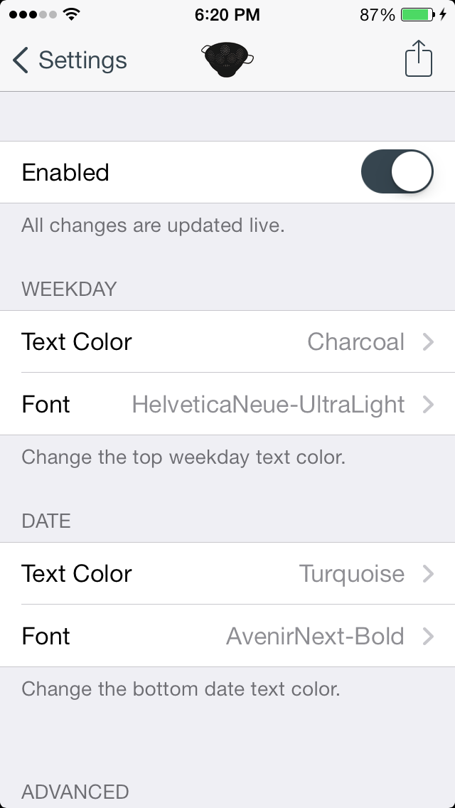
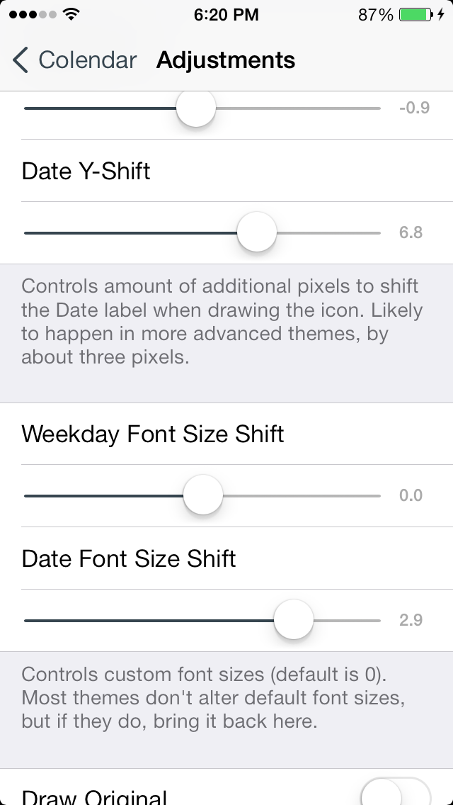
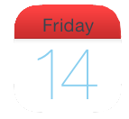

  Making a beautiful, expressive Calendar has never been easier. With Colendar’s flexible and enticingly advanced settings, you can take control of your Calendar icon like never before, and watch everything change instantly. Whether it’s to make the icon feel more at home, drastically change its font or color scheme, or simply remove unnecessary labels, Colendar is an advanced theming utility for all iOS users.
For only $0.99 from the BigBoss repo, you’ll be more than content with every detail of Colendar, and the many updates to come.
Colendar currently supports both the default Calendar app and rpetrich’s Gregorian app. Colendar plays nice with all iOS 7 and iOS 6 devices, including arm64 and iPad models, and should be fully upwards and backwards compatible. Does NOT require WinterBoard or any other tweaks.
Colendar has been tested and confirmed working on all devices running iOS 7 and iOS 6, and should be backwards compatible as far as the icon goes.
“Colendar is the future of Calendar icon..."
— rv1raj
"I was finally able to install colendar, and I’ve got to say, I’m impressed! Finally able to customize the calendar again!"
- Bryce Dougherty
"Colendar is simply brilliant."
— Meteochu
"It’s a must have tweak for themers to match color of the calendar."
— Vishav
"Never been easier... Wow... I did not notice the advanced adjustment section... awesome!"
— 75bosko
"working great. I am using it with #Gregorian by @rpetrich and it looks really good."
— ifouthxion
"Yep."
— Aehmlo